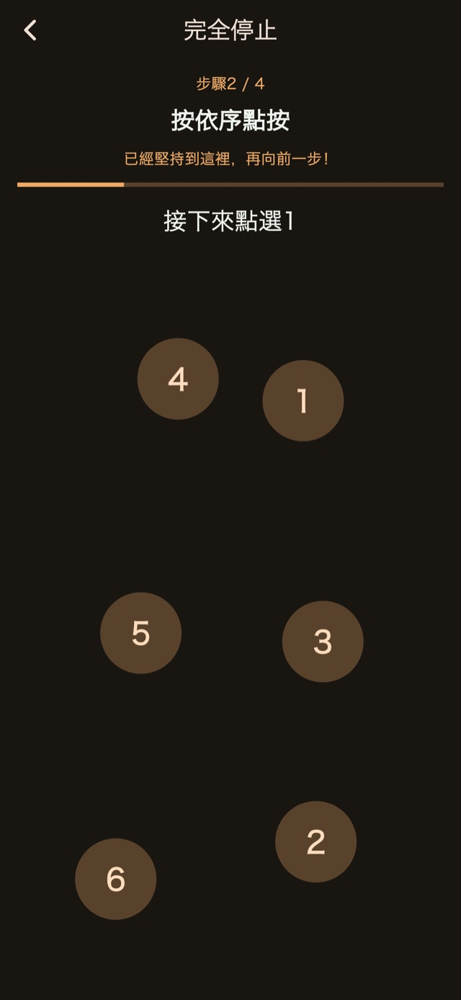
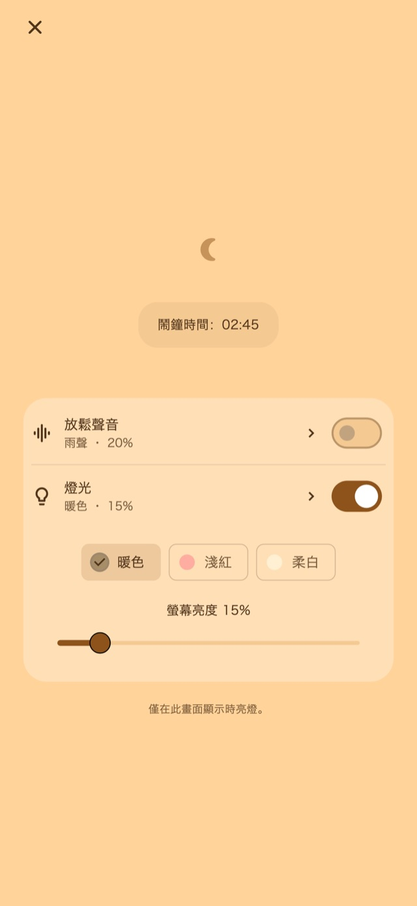

放鬆聲音
休息時可聆聽雨聲、海浪或白噪音。 聲音只在你主動開啟後播放，並在第一次鬧鐘前漸弱、停止。
01震動模式
長度與節奏不斷變化，帶來不同於日常通知的震動。讓這種「不太一樣」的感覺，成為醒來的契機。
短震、長震、連續震動。可選隨機、通知風格、以長震為主、以短震為主四種基本模式。透過長度與間隔變化帶來不同節奏，設定前也能先試一試。
震動模式
02多次提醒
不必逐一建立鬧鐘。 可以只停止本次提醒並保留後續提醒，也可以結束整組，取消剩餘預約。
儲存次數和間隔需要進階版。
多次提醒
起身後結束
03停止操作
計算、依序點按數字、長按、連續點按等操作，讓停止與稍後提醒需要主動完成步驟。 標準停止與稍後提醒流程已包含在內；修改與組合步驟需使用進階版。

夜間畫面
設定後可開啟夜間畫面等待，調整螢幕亮度與時鐘顯示。也可以在一段時間未操作後隱藏畫面，輕點即可重新顯示時鐘和控制項。
選擇例如30分鐘的時長，或指定起床時間。
保持夜間畫面開啟，依需要開啟音效或燈光。
起身後完成停止步驟，並結束剩餘提醒。
放鬆音效與可調燈光
小睡或哄孩子入睡時，可依需要從夜間畫面開啟。
休息時可聆聽雨聲、海浪或白噪音。 聲音只在你主動開啟後播放，並在第一次鬧鐘前漸弱、停止。
燈光可選暖色、淡紅色或柔和白色，亮度可依當時環境調整。
基本功能免費

免費 / 進階版
四種基本震動、標準停止與稍後提醒、夜間畫面、放鬆音效與燈光皆可使用。 部分畫面會顯示廣告。
| 功能 | 免費 | 進階版 |
|---|---|---|
| 震動模式 | ✓ | ✓ |
| 多次提醒 | 標準設定 | 可自訂 |
| 停止操作 | 標準設定 | 可自訂 |
| 夜間畫面 / 放鬆聲音 / 燈光 | ✓ | ✓ |
| 建立與編輯自己的震動節奏。 | — | ✓ |
| 移除所有廣告。 | — | ✓ |
可選月費方案或一次性購買。月費方案會自動續訂，可在商店帳號設定中管理或取消。購買前請查看購買畫面上的價格與條件。
常見問題
若要使用應用程式自訂的震動節奏，請在設定鬧鐘後保持夜間畫面開啟。按側邊按鈕鎖定螢幕或切換至其他應用程式後，震動將由iOS控制，所選的自訂節奏與強度不會套用。使用前請檢查權限與裝置震動設定，並進行運作測試。
休息時可聆聽雨聲、海浪或白噪音。聲音只在你主動開啟後播放，並在第一次鬧鐘前漸弱、停止。 燈光可選暖色、淡紅色或柔和白色，亮度可依當時環境調整。
四種基本震動、標準停止與稍後提醒、夜間畫面、放鬆音效與燈光皆可使用。 部分畫面會顯示廣告。 移除所有廣告。 調整提醒次數與間隔。 編輯停止與稍後提醒的操作步驟。 建立與編輯自己的震動節奏。 可選月費方案或一次性購買。月費方案會自動續訂，可在商店帳號設定中管理或取消。購買前請查看購買畫面上的價格與條件。
下載
適合小睡與哄睡的震動鬧鐘
基本功能免費
iPhone: iOS 26.1+ / Android: 8.0+